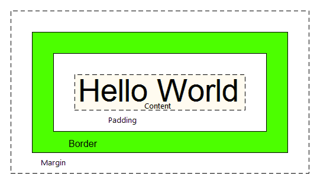

CSS é chamado de linguagem Cascading Style Sheet e é usado para estilizar elementos escritos em uma linguagem de marcação como HTML. O CSS separa o conteúdo da representação visual do site.
A relação entre HTML e CSS é bem forte. Como o HTML é uma linguagem de marcação (o alicerce de um site) e o CSS é focado no estilo (toda a estética de um site), eles andam juntos.
CSS não é tecnicamente uma necessidade, mas provavelmente você não gostaria de olhar para um site que usa apenas HTML, pois isso pareceria completamente abandonado.
O CSS é linkado à página HTML por meio de uma tag na head do documento. Após criar o arquivo que deve ter a extensão .css, o importamos da seguinte maneira:
<link rel="stylesheet" href="NOME_DO_ARQUIVO.css">
Feito isso, podemos começar a implementar as regras de formatação, como são chamadas. Vale lembrar que diferentemente do HTML que conta com uma estruturação mais rígida, aqui não precisamos de nada, é só escrever. Abaixo, temos um exemplo de uma regra básica que alter a cor de todas as 'Headers 1' para vermelho
h1{
color: red;
}
Todo elemento formatado do HTML pelo CSS passa por uma regra no arquivo .css.
É lá que definimos as propriedades que queremos que este elemento tome. Há alguns meios de definir os elementos que queremos.
Podemos formatar um elemento pelo seu tipo. Ao fazer isso, todos os elementos do mesmo tipo na página serão formatados. Para isso, o CSS usa os mesmos tipos dos
arquivos HTML, logo, se quisermos formatar todos os Páragrafos, a nossa regra será usando o 'p'. Exemplo:
p{
font-size: 20px;
}
Outro jeito de formatar vários elementos é com classes. Ao criar um elemento em HTML, há um atributo que podemos colocar na tag de abertura chamado class. Ao definirmos uma classe para aquele componente, ele se torna parte daquele grupo específico e então podemos adicionar quantos outros quisermos e eles farão parte deste grupo.
Classe no documento HTML:
<h1 class="exemplo">Um exemplo</h1>
Ao fazer uma regra para a classe acima, temos a seguinte formatação:
.exemplo{
text-align:center;
}
Por ultimo, temos a Identidade, ou 'ID', diferentemente da classe ou do tipo de elemento, a Id é única e remete apenas a um único componente na página. Ela é uma propriedade da tag de abertura, e é escrita da seguinte maneira:
<p id="idexemplo">Um parágrafo</p>
Ao fazer uma regra para a classe acima, temos a seguinte formatação:
#idexemplo{
color:blue;
}
Em CSS temos várias unidades de medida, cada uma é usada em um caso específico e pode implicar em mudanças na visualização do site de um dispositivo para outro. As unidades mais conhecidas são px, %, em e rem
Pixels são uma unidade absoluta, não mudam de acordo com a tela exibida, isso quer dizer que algo definido por pixels sempre terá aquele comprimento independentemente da tela em que o usuário está visualizando o elemento.
A porcentagem é autoexplicativa, o elemento que tiver o tamanho definido por porcentagem terá o tamanho de acordo com a tela visualizada, é uma unidade que se adapta a tela.
Mais usada para layouts responsivos, a rem se adapta a tela assim como a porcentagem, no entanto ela é muito mutável e pode errar de acordo com a tela.
Segue a lógica do em, porém sempre terá a medida do corpo da página como base.
position: xxxxxx;
A posição especifica onde e de qual maneira um elemento será mostrado na página. Atualmente existem 5 tipos diferentes de se posicionar algo: static, relative, fixed, absolute e sticky.
É a posição padrão de elementos no HTML, elementos assim não são afetados por outras regras de posicionamento, sendo literalmente estáticos na página.
Componentes com essa propriedade são afetados por outras regras de posicionamento, podendo ser movidos de acordo com outras propriedades pela página.
Quando essa propriedade é colocada em um elemento, ele ficará naquela posição permanentemente, mesmo que a página seja scrollada ou movida para os lados.
Similar a propriedade fixed, elementos com a posição absolute ficam permanentemente posicionados em relação ao elemento pai em que estão inseridos.
Elementos sticky flutuam entre absolute e fixed, eles permanecerão na posição até que a página seja scrollada e a partir do momento em que ficariam para trás, eles ficarão "presos" no limite da visualização da página.
Estas propriedades definem a posição de um elemento na página e seu espaçamento em relação a outros elementos.
É a camada mais externa, está fora da borda do elemento.
margin-top: 20pxmargin: 0px 20px 0px 20p x
É uma camada que pode receber atributos visuais como borda sólida ou em pontos, não é usada para posicionar
border-bottom: 20pxborder: 20px solid red;
Camada interna a borda.
padding-left: 20pxpadding: 0px 20px 0px 20p x
Esta propriedade define a sobreposição de elementos, quanto maior o index mais para frente o elemento estará e vice-versa.
z-index: x;
Podem ser definidas de diversas maneiras e atribuidas a elementos textuais e visuais, aqui abordaremos 3:
Como descrito no nome, rgba funciona com 4 parâmetros definindo a cor e a transparência: red, green, blue e alpha. Existe a variação RGB que define apenas cores sólidas e pode ser usada caso não haja a necessidade de transparência.
rgba(200, 150, 20, 0.5)
É usada para cores sólidas, segue o mesmo padrão do rgb porém em um bloco de texto no formato #xxxxxx.
#eaeaea
O CSS tabém conta com nomes predefinidos de cores, varia das mais simples como black, blue e green até outras cores compostas como SlateBlue, Tomato e MediumSeaGreen
tomato
As fontes podem ser importadas diretamente das fontes padrão do navegador ou PC do usuário, usadas em arquivos externos dentro da pasta do site ou com links de importação no estilo de como colocamos o arquivo .css na página html.
font-family: 'Inconsolata', monospace;<link href="https://fonts.googleapis.com/css?family=Roboto|Inconsolata" rel="stylesheet">